Error in `x + 1`:
! non-numeric argument to binary operatorPart 2: Solving code problems
2: inner(x) at #6
1: outer("a") at #9browser()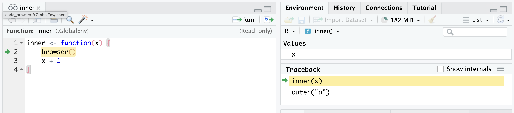
Investigate objects
ls(), ls.str(),
str(), print()
Control execution
| command | operation |
|---|---|
n |
next statement |
c |
continue (leave interactive debugging) |
s |
step into function call |
f |
finish loop / function |
where |
show previous calls |
Q |
quit debugger |
source: What They Forgot to Teach You about R
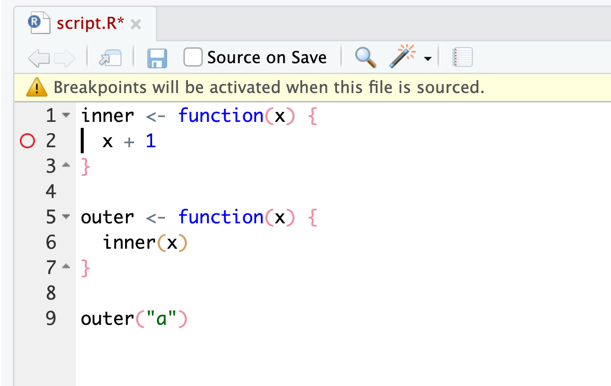
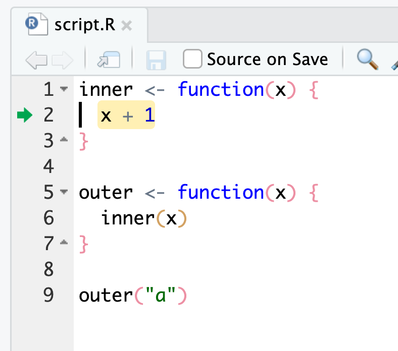
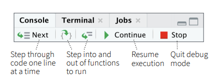
RStudio IDE cheatsheet
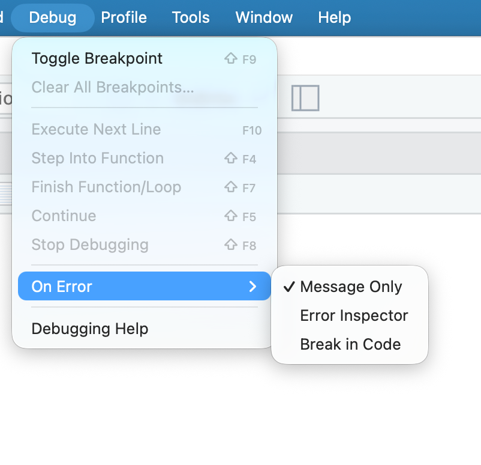
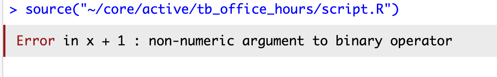
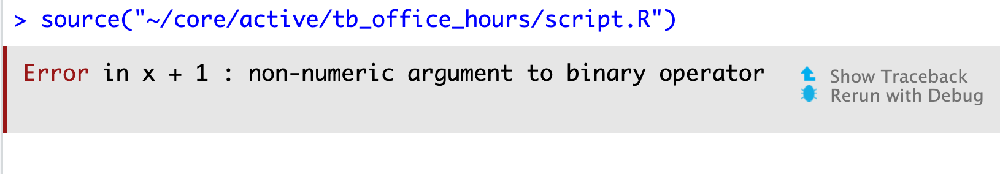
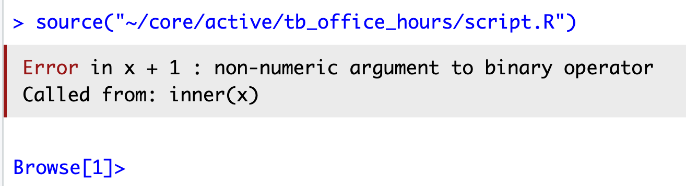
debug()debugonce()options(error = recover)# default, stores warnings until top-level function returns
options(warn = 0)
# warnings are printed as they occur
options(warn = 1)
# upgrades warnings to errors
options(warn = 2)
# initiate recover on warning
# and save original settings
old <- options(warn = 2, error = recover)
# restore original settings
options(old)
# source: rstats.wtfError in `fortify()`:
! `data` must be a <data.frame>, or an object coercible by `fortify()`,
or a valid <data.frame>-like object coercible by `as.data.frame()`.
Caused by error in `check_data_frame_like()`:
! `dim(data)` must return an <integer> of length 2.library())Error in `fortify()`:
! `data` must be a <data.frame>, or an object coercible by `fortify()`,
or a valid <data.frame>-like object coercible by `as.data.frame()`.
Caused by error in `check_data_frame_like()`:
! `dim(data)` must return an <integer> of length 2.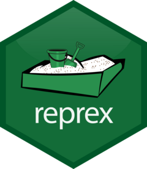
reprex::reprex() in the console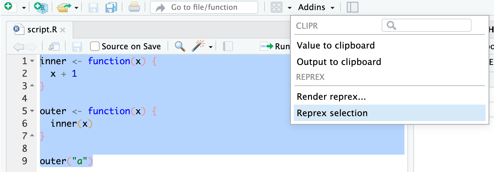
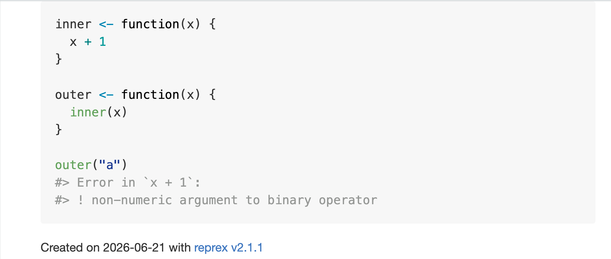
install.packages() and friends.library().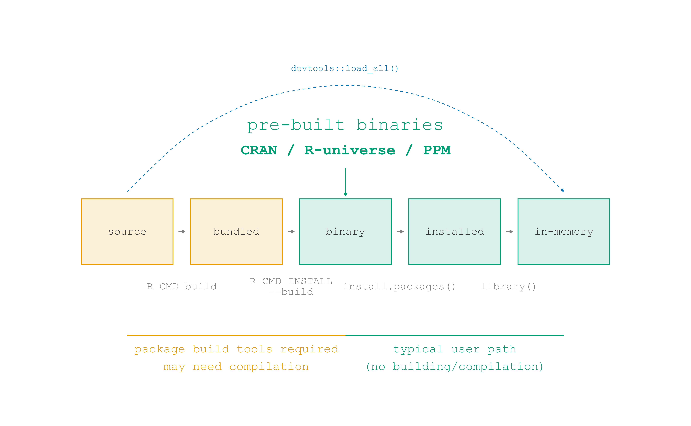
CRAN
"https://cran.rstudio.com/"
attr(,"IDE")
[1] TRUErig add <version>, e.g. rig add 4.1.0 rig add releaserig default <version>, rig rstudio <version>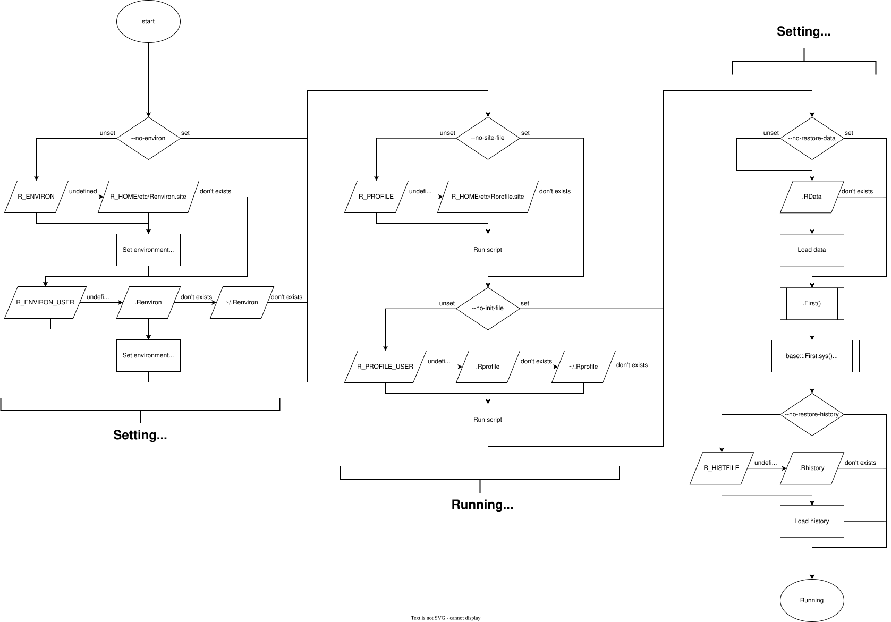
source: What They Forgot to Teach You about R
.Rprofile.Rprofileusethis::edit_r_profile() opens the user-level .Rprofileinteractive() is a useful function to conditionally run code only in interactive sessions, e.g. loading dev packages like devtools and usethis.Rprofile.Rprofile.Rprofile.Renviron.Renvironusethis::edit_r_environ() opens the user-level .RenvironSys.getenv() to access environment variables in your R code.RenvironFrom R:
.Rprofile and .Renviron~/.Rprofile and ~/.Renviron./.Rprofile and ./.Renvironusethis::edit_r_profile(scope = "project") and usethis::edit_r_environ(scope = "project").Rprofile for project-specific settings for package management